结构简图、代号 |
名称 |
一般特性 |
其他特性 |
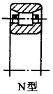 |
外圈无挡边的圆柱滚子轴承 |
1．承载能力大，额定动载荷比1.5～3 2．不能承受轴向载荷 3．不能限制轴和外壳的轴向位移 4．属分离型轴承，安装、拆卸非常方便，尤其当内外圈与轴和壳体都是过盈配合时，更显其优点 5．极限转速高 |
常用作游动支承 |
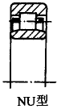 |
内圈无挡边的圆柱滚子轴承 |
||
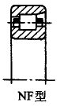 |
外圈单挡边的圆柱滚子轴承 |
1．径向承载能力大，额定动载荷比1.5～3 2．能承受较小的单方向的轴向载荷 3．能限制轴和外壳的单向轴向位移 4．属分离型轴承，安装、拆卸非常方便，尤其当内外圈与轴和壳体都是过盈配合时，更显其优点 5．极限转速高 |
需成对使用 |
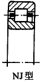 |
内圈单挡边的圆柱滚子轴承 |
||
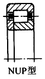 |
内圈单挡边带平挡圈的圆柱滚子轴承 |
1．承载能力大，额定动载荷比1.5～3 2．能承受较小的双向轴向载荷 3．能限制轴和外壳的双向轴向位移 4．属分离型轴承，安装、拆卸非常方便，尤其当内外圈与轴和壳体都是过盈配合时，更显其优点 5．极限转速高 |
用于轴向安装尺寸较小的场合 |
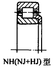 |
|
||
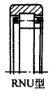 |
无内圈圆柱滚子轴承 |
1．额定动载荷比1.5～3 2．不能承受轴向载荷，不能限制轴和外壳的轴向位移 3．与轴承接触的轴颈表面或外壳孔表面直接作为轴承的内、外滚道表面，其表面硬度、加工精度和表面质量应与套圈滚道相近 4．极限转速高 |
占用径向尺寸小，用于径向尺寸受限制的部件中 |
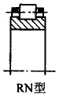 |
无外圈圆柱滚子轴承 |
||
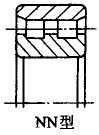 |
双列圆柱滚子轴承 |
1．径向承载能力大，额定动载荷比2.6～5.2 2．不能承受轴向载荷 3．不能限制轴和外壳的轴向位移 4．极限转速高 5．有圆柱孔和圆锥孔两种结构，圆锥孔轴承可微量调整轴承游隙 |
结构紧凑，分离型，刚性大，受载后变形小，可用作游动支承，特别适用于作机床主轴轴承 |
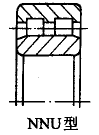 |
内圈无档边双列圆柱滚子轴承 |
||
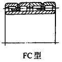 |
双半外圈四列圆柱滚子轴承 |
1．径向承载能力很大，额定动载荷比4.5～6 2．不能承受轴向载荷 3．不能限制轴向位移 4．极限转速高 5．轴承套圈和滚动体组件可方便地分离，轴承的清洗、检查和装拆都很方便 |
结构紧凑，分离型，刚性大。主要用于重型机械和轧钢机械中 |
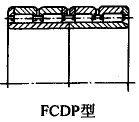 |
双半内圈四列圆柱滚子轴承 |
||
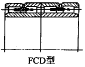 |
双半外圈、双半内圈四列圆柱滚子轴承 |